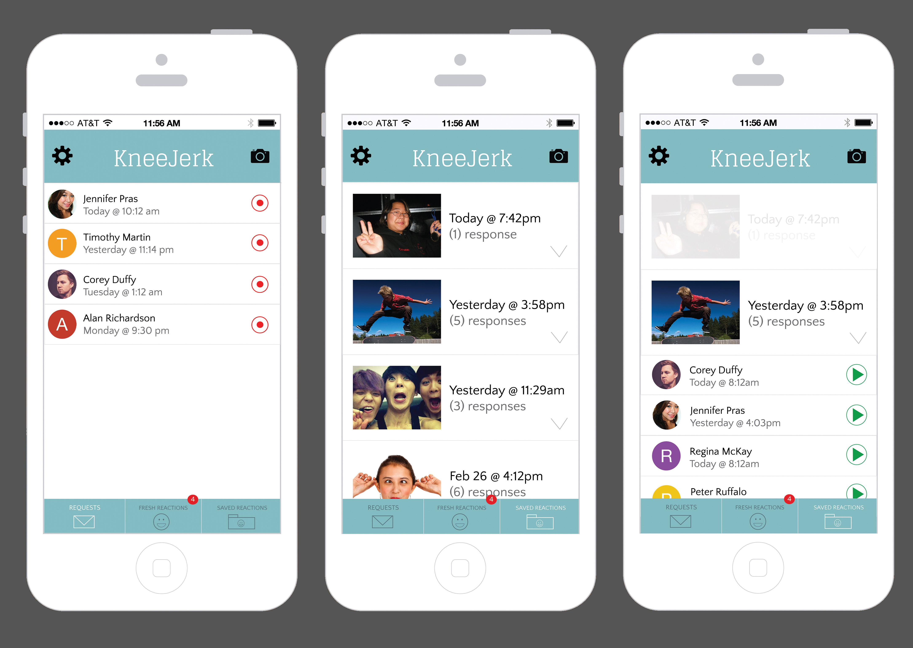
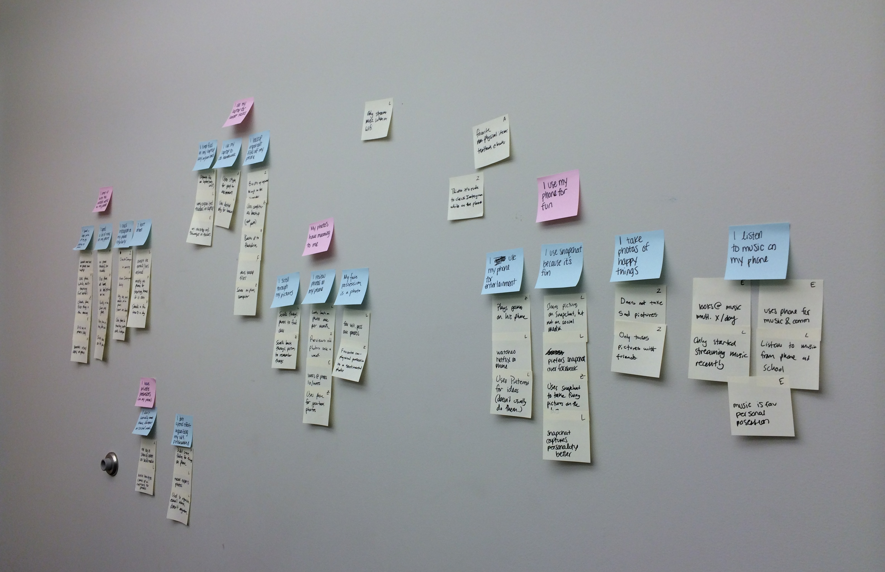
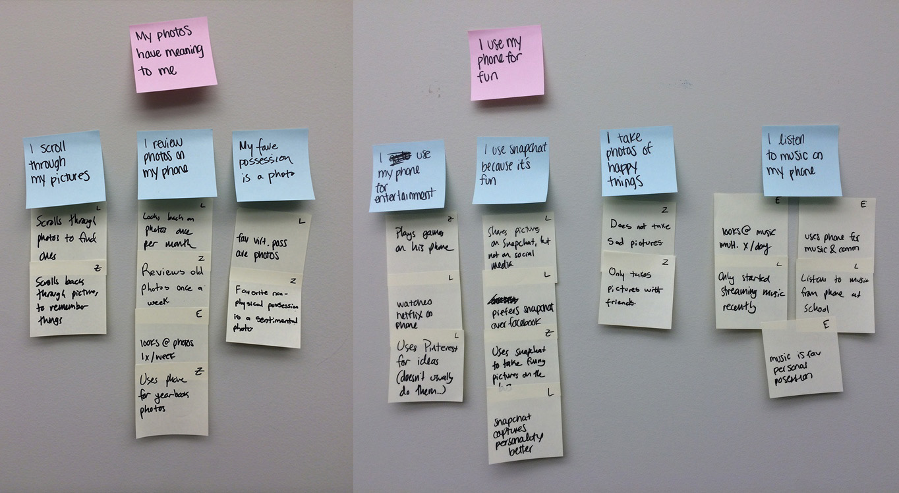
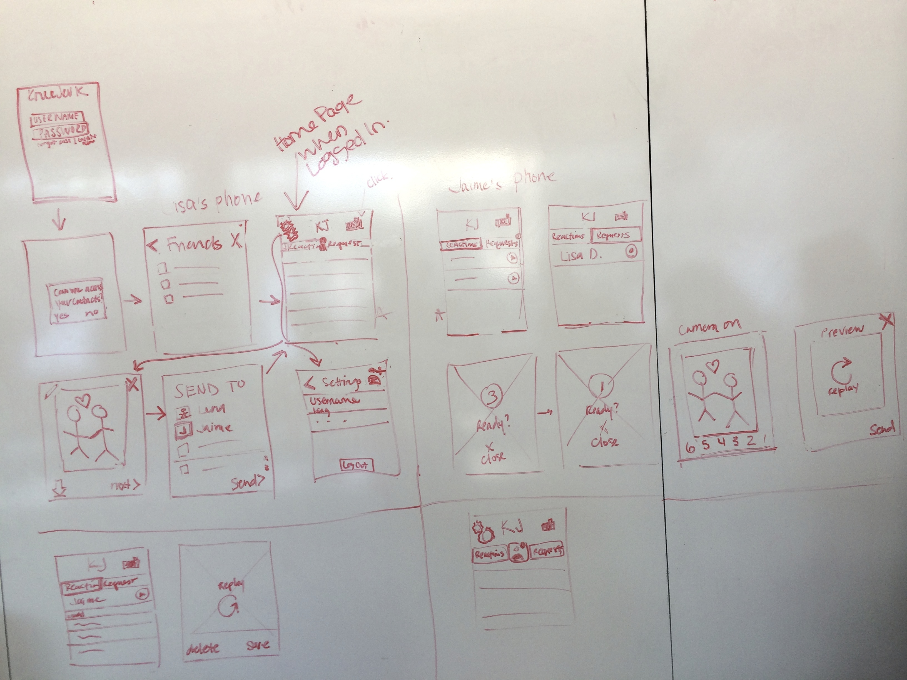
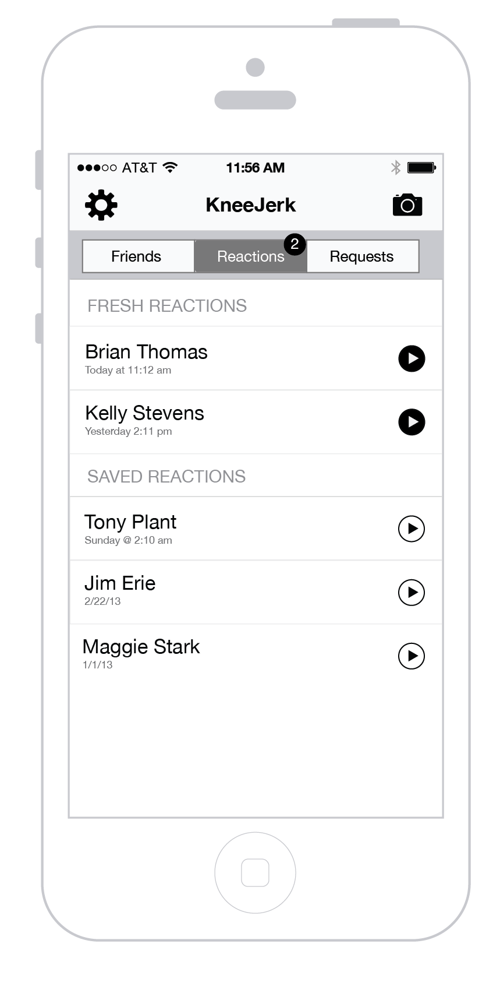
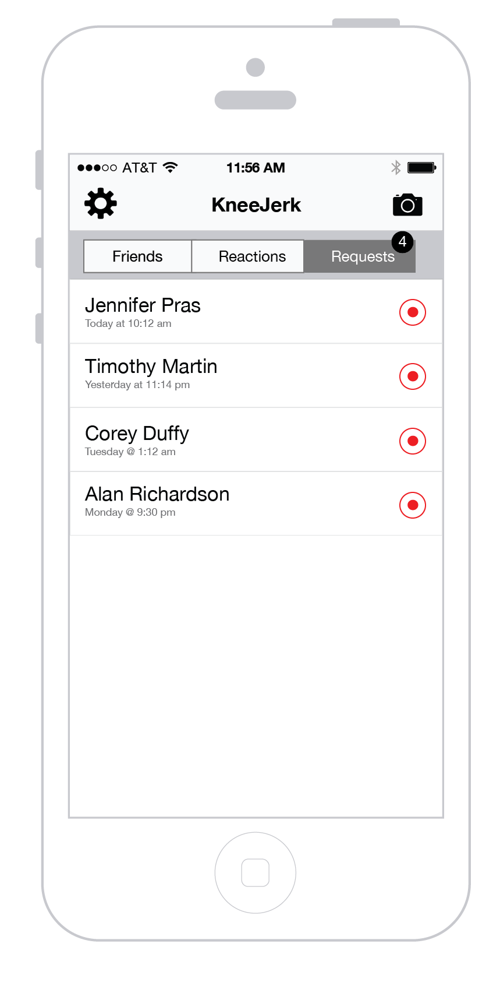
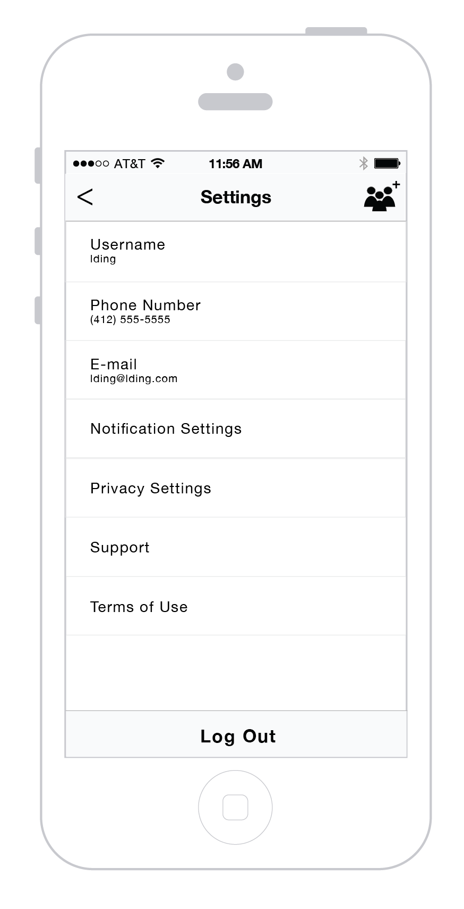
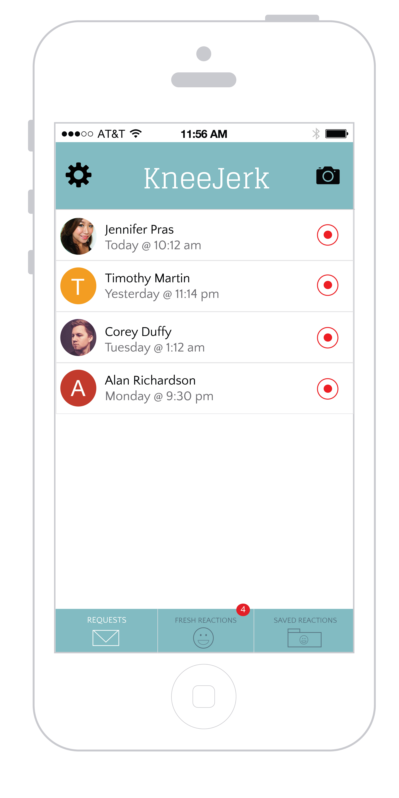

KneeJerk
My Role
- Guerrilla Research
- Interaction Design
- Prototyping
- Visual Design
Process
- Guerrilla Interviews
- Affinity Diagramming
- Ideating
- Wireframing
- Navigation Map
- Hi-fidelity Mockups
- Sales Pitch
Teammates
Timeline
- 1.5 months
- Feb - March 2014

Final Concept
KneeJerk is an app that allows you to share photos and videos with friends, and then see their reactions when they receive them. Myself and three other students created the concept for KneeJerk for our Interaction Design Studio class.







